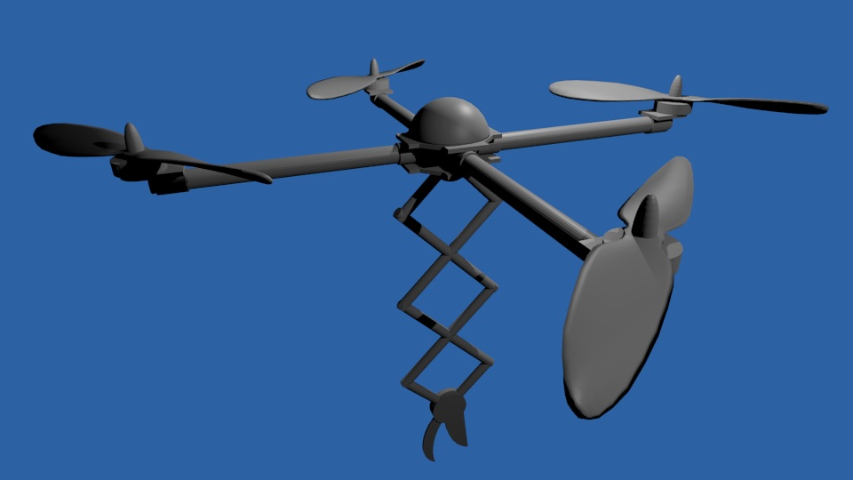

Foliage Extracting TeleControlled Helicopter Development
Team F.E.T.C.H. constitutes a collaboration between the University of Idaho Engineering college and college of Natural Resources (CNR.) It is sponsored by CNR faculty member Dr. Katy Kavanagh, and is mentored by Dr. Herbert Hess and Professor Bruce Bolden. The team consists of six undergraduate students from the University of Idaho: Kora Barnes (Electrical Engineering,) Elliot Dickison (Electrical Engineering,) Cable Johnson (Computer Science,) Eric Johnston (Computer Engineering,) Brian Lee (Computer Engineering,) and Theora Rice (Computer Science.)
Problem Statement
The College of Natural Resources is required to collect sun foliage in order to conduct some of their experiments. Current methods are not efficient and expensive. Therefore, we seek to build a remote controlled helicopter to collect the samples.
